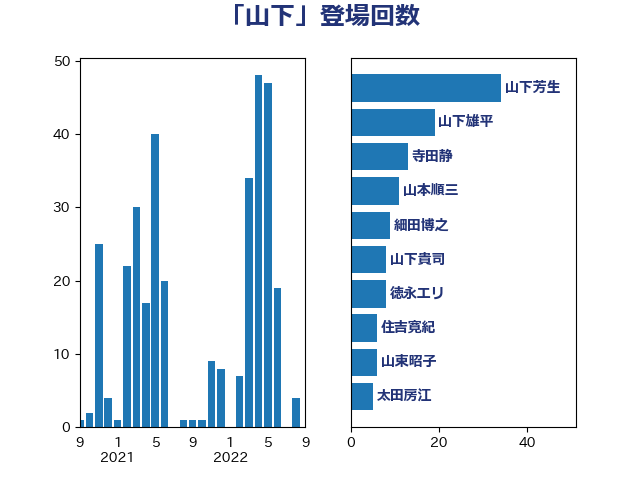

単語「山下」

| 山下芳生 | 日本共産党 | 34 回 |
| 山下雄平 | 自由民主党 | 19 回 |
| 寺田静 | 無所属 | 13 回 |
| 山本順三 | 自由民主党 | 11 回 |
| 細田博之 | 自由民主党 | 9 回 |
| 山下貴司 | 自由民主党 | 8 回 |
| 徳永エリ | 立憲民主党 | 8 回 |
| 住吉寛紀 | 日本維新の会 | 6 回 |
| 山東昭子 | 自由民主党 | 6 回 |
| 太田房江 | 自由民主党 | 5 回 |
| 小泉進次郎 | 自由民主党 | 5 回 |
| 長浜博行 | 無所属 | 5 回 |
| 青木愛 | 立憲民主党 | 5 回 |
| 古屋範子 | 公明党 | 4 回 |
| 打越さく良 | 立憲民主党 | 4 回 |
| 菅義偉 | 自由民主党 | 4 回 |
| 金田勝年 | 自由民主党 | 4 回 |
| 長谷川岳 | 自由民主党 | 4 回 |
| 階猛 | 立憲民主党 | 4 回 |
| 北神圭朗 | 無所属 | 3 回 |
| 嘉田由紀子 | 無所属 | 3 回 |
| 宮沢洋一 | 自由民主党 | 3 回 |
| 山口壯 | 自由民主党 | 3 回 |
| 平口洋 | 自由民主党 | 3 回 |
| 木原誠二 | 自由民主党 | 3 回 |
| 森屋宏 | 自由民主党 | 3 回 |
| 橋本岳 | 自由民主党 | 3 回 |
| 田村貴昭 | 日本共産党 | 3 回 |
| 藤田文武 | 日本維新の会 | 3 回 |
| 豊田俊郎 | 自由民主党 | 3 回 |
| 野村哲郎 | 自由民主党 | 3 回 |
| 長友慎治 | 国民民主党 | 3 回 |
| 三木亨 | 自由民主党 | 2 回 |
| 井上信治 | 自由民主党 | 2 回 |
| 佐々木さやか | 公明党 | 2 回 |
| 古川俊治 | 自由民主党 | 2 回 |
| 堀内詔子 | 自由民主党 | 2 回 |
| 安江伸夫 | 公明党 | 2 回 |
| 岩田和親 | 自由民主党 | 2 回 |
| 平山佐知子 | 無所属 | 2 回 |
| 杉尾秀哉 | 立憲民主党 | 2 回 |
| 梶山弘志 | 自由民主党 | 2 回 |
| 武部新 | 自由民主党 | 2 回 |
| 清水貴之 | 日本維新の会 | 2 回 |
| 片山大介 | 日本維新の会 | 2 回 |
| 矢倉克夫 | 公明党 | 2 回 |
| 石井浩郎 | 自由民主党 | 2 回 |
| 秋野公造 | 公明党 | 2 回 |
| 空本誠喜 | 日本維新の会 | 2 回 |
| 西村康稔 | 自由民主党 | 2 回 |
| 中村裕之 | 自由民主党 | 1 回 |
| 中根一幸 | 自由民主党 | 1 回 |
| 串田誠一 | 日本維新の会 | 1 回 |
| 伊藤岳 | 日本共産党 | 1 回 |
| 倉林明子 | 日本共産党 | 1 回 |
| 務台俊介 | 自由民主党 | 1 回 |
| 原口一博 | 立憲民主党 | 1 回 |
| 古川禎久 | 自由民主党 | 1 回 |
| 古賀友一郎 | 自由民主党 | 1 回 |
| 国光あやの | 自由民主党 | 1 回 |
| 大口善徳 | 公明党 | 1 回 |
| 大野敬太郎 | 自由民主党 | 1 回 |
| 安達澄 | 無所属 | 1 回 |
| 宮本徹 | 日本共産党 | 1 回 |
| 尾辻秀久 | 無所属 | 1 回 |
| 山口俊一 | 自由民主党 | 1 回 |
| 山田宏 | 自由民主党 | 1 回 |
| 岸田文雄 | 自由民主党 | 1 回 |
| 後藤茂之 | 自由民主党 | 1 回 |
| 東徹 | 日本維新の会 | 1 回 |
| 松村祥史 | 自由民主党 | 1 回 |
| 林芳正 | 自由民主党 | 1 回 |
| 永岡桂子 | 自由民主党 | 1 回 |
| 江田憲司 | 立憲民主党 | 1 回 |
| 海江田万里 | 立憲民主党 | 1 回 |
| 田村憲久 | 自由民主党 | 1 回 |
| 稲富修二 | 立憲民主党 | 1 回 |
| 簗和生 | 自由民主党 | 1 回 |
| 義家弘介 | 自由民主党 | 1 回 |
| 蓮舫 | 立憲民主党 | 1 回 |
| 赤羽一嘉 | 公明党 | 1 回 |
| 越智隆雄 | 自由民主党 | 1 回 |
| 足立康史 | 日本維新の会 | 1 回 |
| 辻元清美 | 立憲民主党 | 1 回 |
| 逢坂誠二 | 立憲民主党 | 1 回 |
| 金子恵美 | 立憲民主党 | 1 回 |
| 鈴木宗男 | 日本維新の会 | 1 回 |
| 青柳陽一郎 | 立憲民主党 | 1 回 |
| 須藤元気 | 無所属 | 1 回 |
| 高橋千鶴子 | 日本共産党 | 1 回 |
| 高良鉄美 | 無所属 | 1 回 |